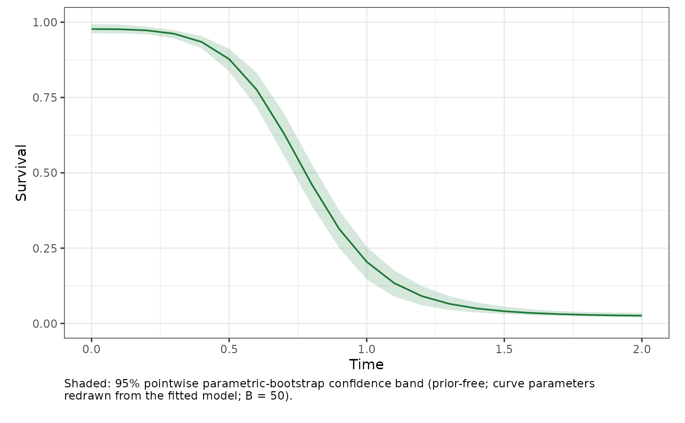

Plot a heat-injury survival trajectory with a bootstrap confidence band
Source:R/heat_injury.R
plot_heat_injury.Rdplot_heat_injury() draws the point-estimate survival trajectory from
predict_heat_injury() inside the pointwise parametric-bootstrap confidence
band from heat_injury_envelope(). The band is prior-free – a confidence
band, never a posterior / credible band (the project's honest-uncertainty
contract).
Usage
plot_heat_injury(
object,
trace,
group = NULL,
target_surv = NULL,
t_c = NULL,
repair = NULL,
irreversible = TRUE,
nboot = 1000L,
conf.level = 0.95,
seed = NULL,
time_div = 1,
xlab = "Time",
ylab = "Survival"
)Arguments
- object
A
profile_tlsfit fromfit_tls(), or afreq_tlsworkflow fromfit_4pl().- trace
A data frame with numeric columns
time(strictly increasing, at least two rows) andtemp(degrees C).- group
Optional single group level (grouped fits only; required when the fit is grouped).
- target_surv
Optional absolute survival threshold defining one lethal dose: a single probability strictly between the fitted lower and upper asymptotes.
NULL(default) uses the project-default relative threshold (the curve midpoint(low + up) / 2), matchingderive_ctmax()andderive_lt().- t_c
Optional damage-cutoff temperature (degrees C): at or below it the damage rate is zero.
NULL(default) applies no cutoff.- repair
Optional named list of Sharpe-Schoolfield repair parameters (see Details);
NULL(default) means no repair.- irreversible
Logical; if
TRUE(default) survival is monotone non-increasing (mortality does not reverse even if dose is repaired).- nboot
Number of bootstrap replicates (default
1000).- conf.level
Width of the pointwise confidence band (default
0.95).- seed
Optional integer seed; when supplied the bootstrap is reproducible without disturbing the caller's random stream.
- time_div
Optional positive divisor applied to
timeon the x-axis (for example24to show days when the trace is in hours); default1.- xlab, ylab
Axis labels.
See also
heat_injury_envelope() for the band data, predict_heat_injury()
for the point trajectory.
Examples
d <- simulate_tls(family = "binomial", CTmax = 36, z = 4, seed = 1)
fit <- fit_tls(d, y = survived, n = total, time = duration, temp = temp,
family = "binomial", tref = 1)
trace <- data.frame(time = seq(0, 2, by = 0.1),
temp = 34 + 6 * sin(seq(0, 2, by = 0.1)))
plot_heat_injury(fit, trace, nboot = 50, seed = 1)
